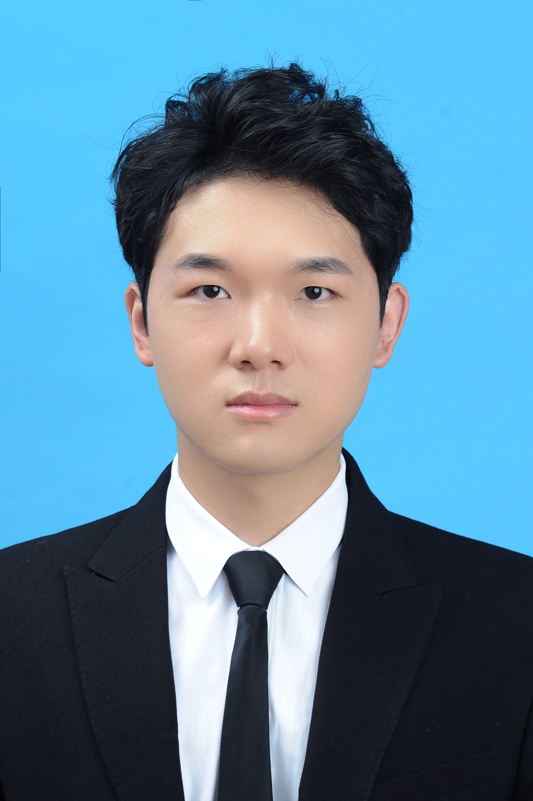

Jinqiu Deng (邓瑾秋)
|
 |
Master student,
School of Mathematics and Computational Science,
Xiangtan University,
Changsha, Hunan 411105, P.R. China
Phone: +86 183 7958 8281
Email: 202021001287@smail.xtu.edu.cn
|
About me
I am currently an incoming master student at Xiangtan University, under the guidance of Assoc. Prof Jianping Zhang.
Before that, I received the B.S. degree in Information and Computing Science from the School of Statistics and Mathematics,
Zhongnan University of Economics and Law in 2020.
Research Interests: medical image processing, Deep learning, Dachine learning, etc
I am currently an incoming master student at Xiangtan University, under the guidance of Assoc. Prof Jianping Zhang.
Before that, I received the B.S. degree in Information and Computing Science from the School of Statistics and Mathematics,
Research Interests: Medical Image Processing, Deep Learning, Dachine Learning, Medical Image Registration, Image Generation.